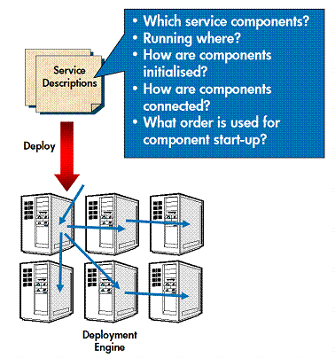
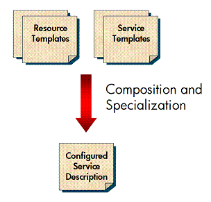
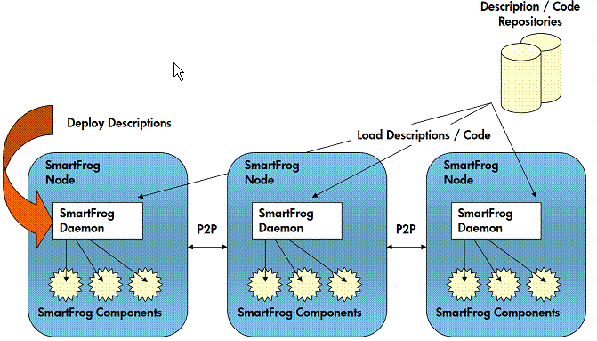
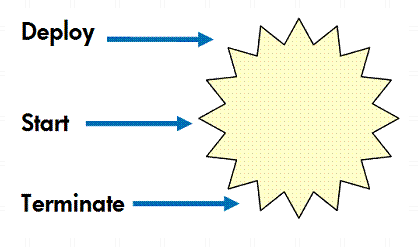

Concepts
The SmartFrog framework consists of three major elements:

The SmartFrog language is a declarative, data description language, supporting hierarchical attribute:value pairs, used to capture complete service configurations. The language supports templates using a prototype approach, meaning that any configuration description instance can act as a prototype for a new one, which can overwrite and extend the original. This mechanism allows a configuration to be progressively specialized, without overwriting configuration files (a common source of error). The language also supports various attribute linking features, which prevent configuration data from needing to be duplicated in multiple places (another common source of error).
The language provides support for composition, which is the ability to create a larger configuration form a combination of smaller ones, This maps directly into the requirement to be able to compose larger systems from smaller ones. Additionally, there are various language escape mechanisms that permit the inclusion of arbitrary functions to manipulate configuration data as part of the language processing stage, as well as a schema mechanism to check for well-formed configurations.

Taken as a whole, these mechanisms allow services to be customized and assembled in different ways, typically by extending, customizing, and composing templates describing different aspects of the required service.
At runtime, the configuration data are interpreted by components, which use the data to determine their behavior. It is important to note that the component semantics are not understood at all at the language level, hence the language can be used to capture a wide range of components and models.
The deployment engine is a distributed, decentralized, and secure runtime mechanism to deploy components in the right locations with the right configuration.

The basic deployment engine consists of a SmartFrog daemon running on each node or resource. The daemon is capable of interpreting SmartFrog configurations, which it uses to identify which SmartFrog components should be loaded. Once the components are loaded, they request their configuration data from the deployment engine and act on the data appropriately.
The deployment engine can load components and descriptions from node-local storage or over the network from Web servers or databases. The engine is fully peer to peer, that is, individual nodes communicate as necessary to deploy components in the right places. There is no required central configuration server, though the design of the framework does not preclude this style of approach.
The deployment engine is secured through the use of public-key, cryptographic signing of configurations and component code. The deployment engine will only load configuration data and components that have been signed by an appropriately trusted authority.
SmartFrog components implement a common, simple lifecycle. This is what allows them to be systematically and correctly orchestrated by the framework.

Components can either implement all their intended functionality directly, or, more usually, they can encapsulate legacy or non-SmartFrog components, allowing the framework to configure and deploy assemblies of third-party applications.
SmartFrog components have access to a rich deployment API, which allows them to deploy and manage components of their own. This is a fundamental building block for adaptive service behavior allowing, for example, the ability to add Web servers to respond to increasing demand.
Some fundamental SmartFrog components are provided as part of the basic framework, including those that control deployment behavior and lifecycles across groups of components. Indeed, SmartFrog can be thought of as fractal since much of its functionality is implemented as a set of SmartFrog components.
Additional components can easily be added to increase the functionality of the system, the intent being to build a rich library of service components that can be configured, composed, and reused.